Dos mil millones para ahorrar 81
El Ayuntamiento de Cuernavaca pidió al Congreso de Morelos autorizar una asociación público-privada para que una empresa instale una planta solar en Jojutla y el SAPAC le pague hasta 1,892.4 millones de pesos en 20 años, con el recibo del agua y las participaciones federales como respaldo. La evaluación del propio organismo calcula un ahorro neto de 81.2 millones en 19 años. La columna revisa las 506 páginas del expediente: los requisitos de la ley que remiten a papeles que no vienen, el estudio que la Junta ordenó publicar y no está en su página, un comparador que supone un crédito público más caro que el de la empresa y un margen tan estrecho que un año malo ya cuesta más que la CFE. Cada número va con su página y su operación.
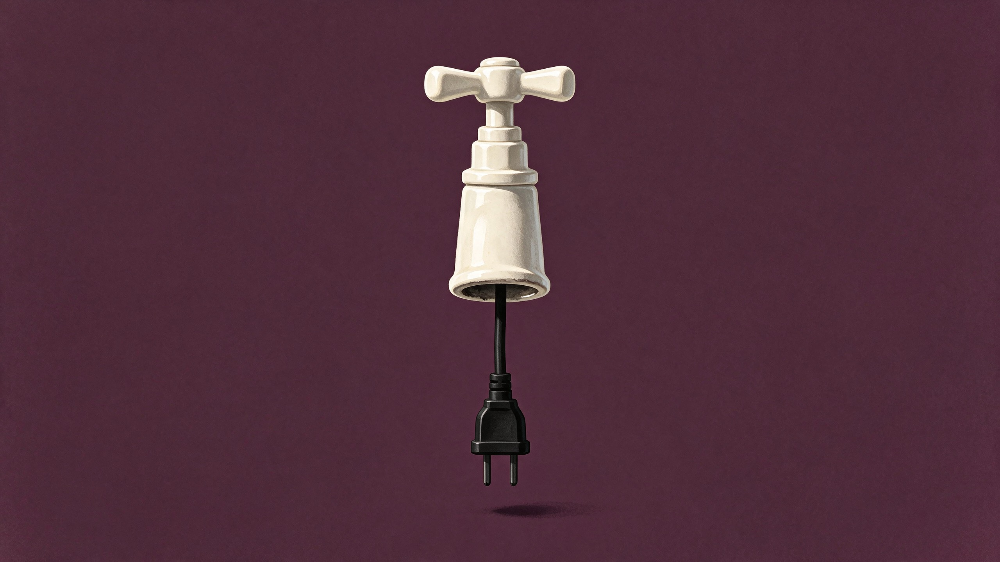
En la página 400 del expediente que Cuernavaca mandó al Congreso hay una sección numerada 5.7. Repasa los ocho requisitos que la Ley de Asociaciones Público Privadas de Morelos exige a quien propone un proyecto sin que nadie se lo pida. Concluye que este "satisface la totalidad de estos requisitos". Para dos de ellos, la inversión y el contrato, no da el dato. Dice que "constan en la PNS". La PNS es la propuesta no solicitada de la empresa, y no viene en las 506 páginas.
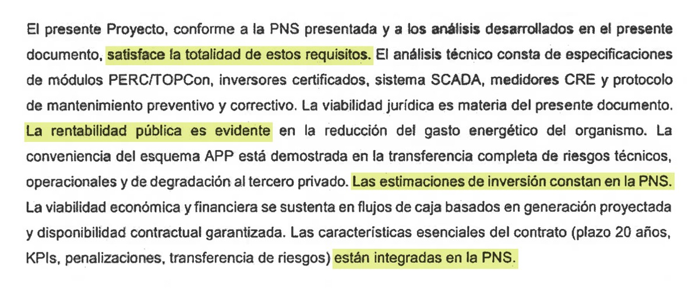
Lo que vota el Congreso
El oficio SA/139/2026 pide autorizar una asociación público-privada: una empresa diseña, financia, construye y opera una planta solar, y el SAPAC le paga hasta 1,892.4 millones de pesos en 20 años. El acuerdo que se vota habla de módulos "distribuidos en las instalaciones del Organismo". Los anexos describen otra cosa: una central en un predio de Jojutla, municipio que no colinda con Cuernavaca. Hasta el tamaño cambia de una página a otra. Un apartado de los estudios previos habla de 12 a 15 megawatts; el resto del expediente, de 24.33.
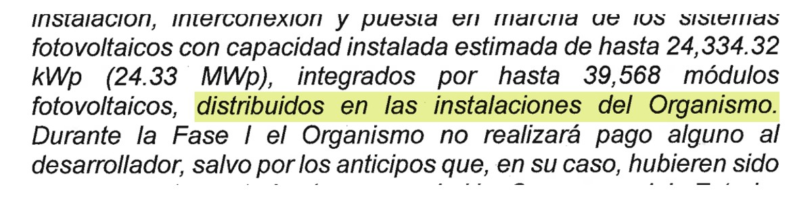
Una central lejana obliga a mover la energía por la red de la CFE. En la sesión de cabildo, el presidente municipal lo reconoció: "eso es lo que genera un costo para quien lo haga". La tabla de costos no tiene un renglón con ese nombre. El más cercano, "Convenio CFE", por 128 millones, se define solo como "costos derivados del convenio con la Comisión Federal de Electricidad".
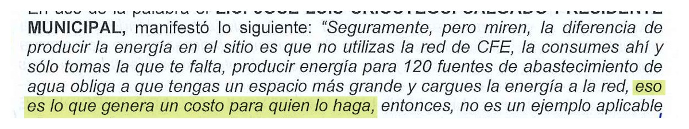
El terreno, según los estudios previos, son dos predios de unas 19 hectáreas, propiedad de dos particulares, con uso de suelo agrícola, que Jojutla tendría que cambiar. El propio dictamen admite que ese permiso y los de construcción, protección civil e impacto ambiental se tramitarán después. En las 506 páginas no hay uno solo del ayuntamiento de Jojutla. Para valuarlo se usaron once anuncios de internet, entre ellos predios "con vocación turística de la zona de Tequesquitengo", y el resultado, 75.6 millones de pesos, se presentó como "referencia conservadora".
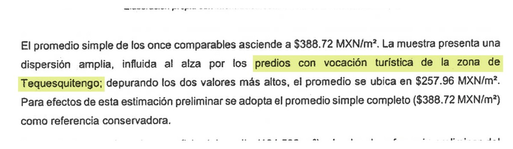
El papel que no llegó
La ley es precisa. El artículo 35 pide que la propuesta venga acompañada de un estudio preliminar de factibilidad con ocho elementos, entre ellos las autorizaciones de uso de suelo, las estimaciones de inversión y las características esenciales del contrato. Añade una consecuencia: "Si la propuesta no solicitada incumple alguno de los requisitos a que se refiere este artículo, o los estudios se encuentran incompletos, no será analizada".
Según el dictamen del comité del SAPAC, la propuesta de Efficiency Matters Corporation, S.A. de C.V., presentada el 10 de abril de 2026, "fue acompañada del estudio preliminar de factibilidad que exige el artículo 35". El 11 de mayo, la dirección del organismo emitió opinión de viabilidad favorable. Ni la propuesta ni su estudio están en el expediente que recibió el Congreso. Tampoco aparece la Manifestación de Interés con la que, según el mismo dictamen, el SAPAC abrió la puerta a esa propuesta.
No es un faltante aislado. De los ocho elementos del artículo 35, el expediente remite tres a papeles que no trae: la inversión y el contrato, a la propuesta de la empresa; la viabilidad financiera, a su modelo. Otros dos llegan a medias. La descripción técnica cambia de tamaño y de lugar según la página, y los permisos de uso de suelo quedan para después. La viabilidad jurídica, la rentabilidad social y la conveniencia del esquema sí vienen. Puede que lo demás exista en los archivos del SAPAC. En las 506 páginas que vota el Congreso, no.
El análisis que comparó el proyecto contra hacerlo con recursos propios no llena el hueco. Ahí se lee que "para el presente Proyecto Público de Referencia se toma el diseño de la Propuesta No Solicitada" de la misma empresa, y entre sus fuentes de datos figuran esa propuesta y su modelo financiero. El financiamiento también sale de la propuesta. El capital de los socios aparece con un costo de 7.25%, la "Prime rate considerada en la PNS", por debajo del 10.82% que cuesta la deuda bancaria. En finanzas es al revés: el socio arriesga más que el banco y cobra más. La diferencia entre lo que se le pagaría al desarrollador y su costo base es de 92.2 millones, la misma cifra, al centavo, que el análisis anota como costo de los riesgos que se transfieren a la empresa.
Tampoco se puede saber cuánto pondría la empresa de su bolsa. La tabla que debería decirlo anota 175.1 millones de crédito bancario como el 80% y 597.8 millones de capital de los socios como el 20%. Leída por montos, la empresa pondría más de tres veces lo que presta el banco; leída por porcentajes, sería al revés. Ninguna de las dos lecturas cierra: los dos montos suman 772.9 millones, no los 875.4 del total, y los 175.1 son, al centavo, el 20% de ese total. El resto del análisis no duda, porque calcula la tasa de la empresa con 80% de deuda bancaria y 20% de capital. Con esa proporción, el banco pondría unos 700 millones y la empresa unos 175. En una asociación así, esa cifra dice cuánto arriesga el socio privado, y el expediente que vota el Congreso no permite saberlo con certeza.
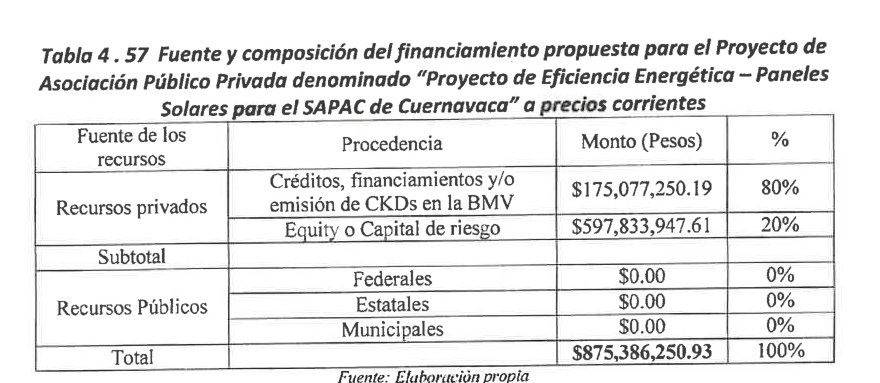
Si el grueso del dinero lo pone un banco, la pregunta obvia es por qué el SAPAC no pide el crédito directo y le paga la obra a la empresa, en lugar de pagarle a una empresa que, a su vez, irá al banco a la TIIE más cuatro puntos, 10.82%. El comparador sí modeló el crédito directo: 910.8 millones, por los que el organismo pagaría 2,166.5 millones entre capital e intereses, 1,096.6 de ellos solo en intereses. Es más de lo que la tabla de la APP anota como costo de todo su financiamiento, 885.7 millones. En tasa, el comparador supone que el SAPAC se endeudaría a cerca de 10.7% anual, casi lo mismo que la empresa, aunque su préstamo tendría de respaldo las mismas participaciones federales. Con ese supuesto, la APP gana por 78.5 millones de Valor por Dinero en la evaluación de conveniencia y por 9.3 en los estudios previos. Un punto menos de tasa en el crédito público le quitaría unos 138 millones de pagos, más que cualquiera de las dos ventajas. Ambas descansan también en los 92.2 millones de riesgos que según el análisis pasan a la empresa, y ese traspaso es parcial: el 95% del pago se cobra aunque la planta rinda menos.
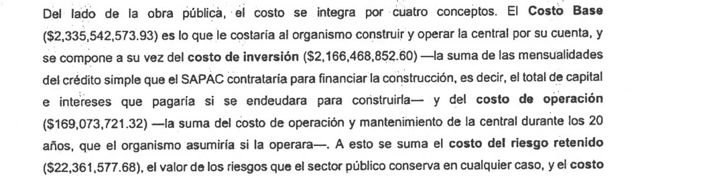
El comité que debía revisarlo todo se instaló el 26 de agosto; el análisis está fechado el 28. En la Junta de Gobierno, los representantes de la Entidad Superior de Auditoría y Fiscalización, la Comisión Estatal del Agua y la Comisión Nacional del Agua se abstuvieron. La representante de la Conagua había preguntado qué pasaría si el organismo lograba bajar su consumo de energía; el acta no registra una respuesta clara.
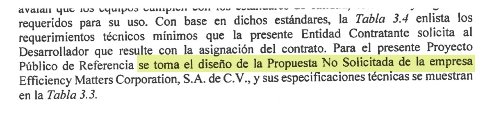
Habrá concurso abierto, aunque el proyecto que se va a concursar lo diseñó la empresa que lo propuso, con su terreno y sus números. Si no gana, recibe un "certificado para el reembolso de los gastos incurridos" en sus estudios. Del historial de la empresa, el expediente no dice nada. En Navojoa, Sonora, firmó en 2013 un convenio de alumbrado por 100 meses, 68 millones financiados y 1.8 millones de pago mensual por casi 10 mil luminarias, según Meganoticias. El encargado de Servicios Públicos de ese municipio, Mario Ramírez, dijo al Diario del Yaqui que la empresa "no cumplió con la atención". Semanas después, el alcalde de Cajeme, Javier Lamarque, la defendió: "En el caso de Navojoa, lo que se dice es incorrecto". En Tijuana, el semanario Zeta reportó en 2022 que ganó una licitación de luminarias con una oferta 4.9 millones más cara que la más barata. Nada de eso viene en el expediente.
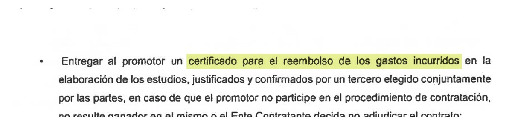
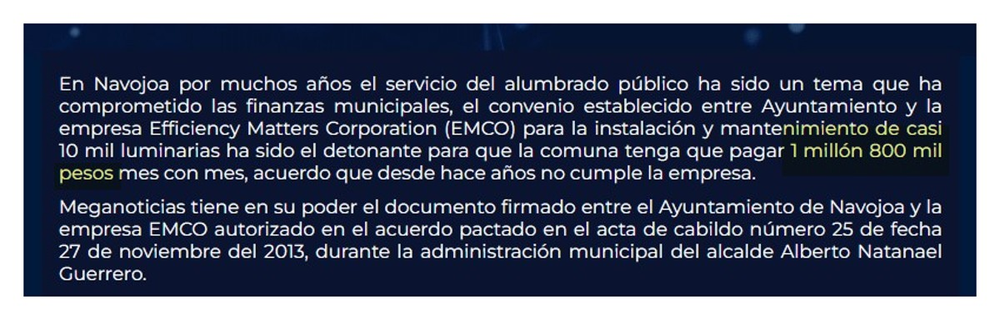
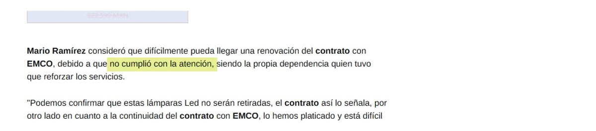
Lo que la ley manda publicar
El artículo 35 le habla a la empresa. El 23 le habla al organismo. Antes de declarar viable un proyecto, el SAPAC debe tener diez análisis propios, del diseño técnico a los riesgos, pasando por el terreno, los permisos, lo que aporta cada parte en dinero y la viabilidad financiera, e integrarlos en un expediente técnico. El último párrafo dice qué se hace con él: "deberá ser publicada en internet en la página del Poder Ejecutivo del Estado o, en su caso, del Municipio correspondiente, y ser entregada al Congreso del Estado". El artículo 24 condiciona la asociación a dos cosas, haber cumplido el 23 y la autorización previa del Pleno.
Contra esa lista, el expediente llega corto. Lo que aportaría cada parte en dinero viene en una tabla que no cuadra. Del terreno, la ley pide la información del Registro Público sobre dueños y gravámenes (artículo 26). Los estudios lo dan por libre de gravámenes "conforme a la información disponible" y dejan para después el certificado registral y el consentimiento de los dos copropietarios.
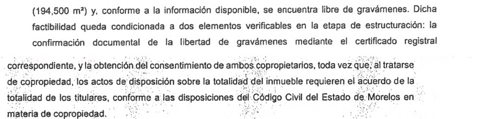
La Junta de Gobierno conocía la obligación. En su sesión del 4 de septiembre, con el artículo 23 citado, acordó que "el Estudio de Viabilidad deberá publicarse en la página oficial de internet del Organismo a más tardar dentro de los diez días hábiles siguientes". Al 13 de noviembre, lo que hay en esa página es un aviso en la portada que lleva a un solo documento de ocho páginas, subido el 10 de noviembre según el registro del propio sitio. Es el dictamen del comité que declara viable el proyecto, no el estudio en que se apoya. En la página del Ayuntamiento hay un boletín de prensa del 17 de septiembre, sin documentos.
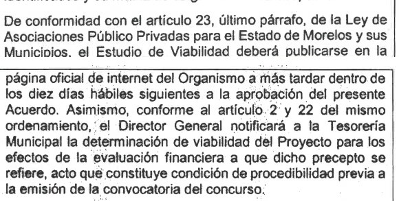
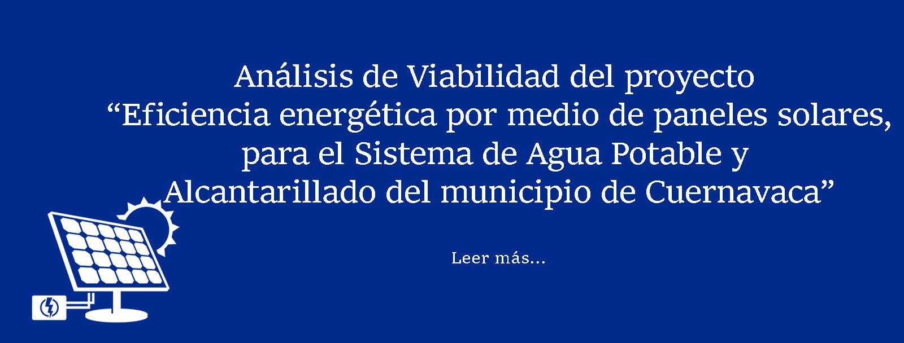
La ley también dice quién responde. En los municipios, sus obligaciones las ejercen "las correspondientes autoridades del Ayuntamiento" (artículo 2), y el incumplimiento por parte de servidores públicos "será sancionado conforme a la normativa de la materia" (artículo 111). El cuadro de marco legal que acompaña los estudios tampoco ayuda a ubicarlo. Su "artículo 23" solo pide un contrato por escrito y, cuando haga falta, autorizaciones. El que publicó el Periódico Oficial en 2021 es el de los diez análisis, la publicación y la entrega al Congreso.
Queda un límite que la misma ley marca. La opinión de viabilidad que la dirección del organismo emitió el 11 de mayo "no representa un acto de autoridad y contra ella no procederá instancia ni medio de defensa alguno" (artículo 35). Aprobado el cabildo, el filtro que queda es el Congreso.
Para ser parejos
La ley no exige, en esta etapa, el acta constitutiva de la empresa ni el poder de su apoderado. La capacidad legal se acredita en el concurso, conforme a la convocatoria y sus bases. Su ausencia no es una ilegalidad; es un expediente que no dice quién es, en papel, la empresa que diseñó el proyecto. El crédito directo tampoco sería gratis: también pediría garantía, y el riesgo de construir y operar se quedaría en el organismo, que hoy pide prestado para aguinaldos. La construcción tampoco está inflada. Sale entre 0.77 y 0.86 dólares por watt, entre 15% y 29% arriba del promedio mundial de 0.667 que IRENA reportó para 2025. Queda dentro del rango de los proyectos de ese año. Al terminar el contrato, la infraestructura pasa al SAPAC. Con el terreno el expediente titubea: en una página el predio "pasaría a ser propiedad del Municipio"; en otra, el desarrollador "podrá transmitir al SAPAC la propiedad del inmueble, o constituir a su favor el derecho real o personal que corresponda".
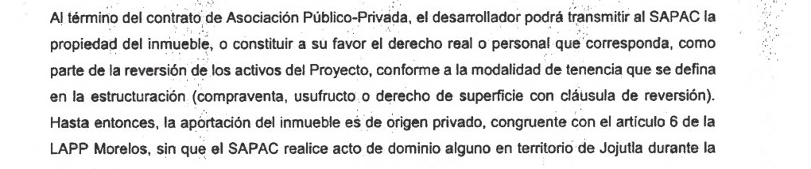
De cada 100 pesos de luz que la planta evitaría, 94 se irían en el pago a la empresa.
El problema que el proyecto ataca es real. Según su director, la luz le cuesta al organismo cerca del 40% mensual de sus ingresos.
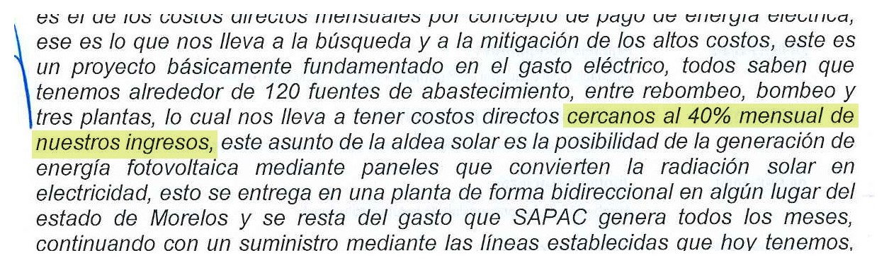
Lo que se cobra
El mismo director calculó el ahorro del primer año en "cerca de los cuatro millones ochocientos mil pesos". Ese año, el SAPAC le pagaría a la empresa unos 84 millones. Construir la planta, con todo y terreno, cuesta 509 millones con IVA, según las tablas de costos del expediente. El componente de inversión que pagaría el organismo en 228 meses suma 1,516 millones. La tabla de la APP explica casi toda la diferencia con un renglón: 885.7 millones de "costo de financiamiento". Lo que se paga de más, unos mil millones, rebasa cualquier cifra que el propio gobierno ha dado de su deuda con CFE: 300 millones, según el presidente municipal en la Junta del 4 de septiembre; unos 76, según el director en cabildo.
La cuenta de fondo es otra. El acuerdo compromete hasta 1,892.4 millones de pesos en 20 años, una obligación que la Junta ordenó inscribir en el Registro Público Único de Financiamientos y Obligaciones, el mismo donde se anota la deuda. A cambio, el director prometió en cabildo que en 19 años el organismo dejaría de pagar "cercanos a los 490 millones de pesos, incluido la deuda que se tiene con CFE". La evaluación de conveniencia del propio SAPAC da otra cifra: un ahorro neto acumulado de 81.2 millones en 19 años, a precios de 2027.
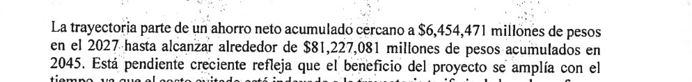
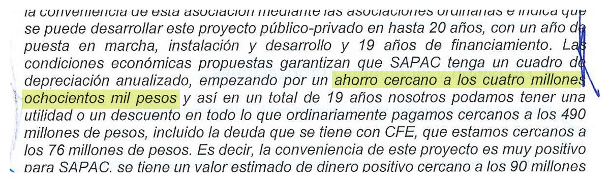
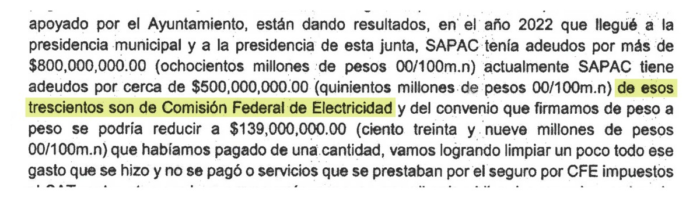
Esos 81 millones son el escenario generoso, el de una planta que cumple todos los años. El margen es estrecho. Según la misma evaluación, el primer año la planta le evitaría al organismo 104.6 millones de luz y le dejaría un ahorro neto de 6.5; el resto, unos 94 de cada 100 pesos, se va en el pago a la empresa. Como el 95% de ese pago no se descuenta aunque la planta genere menos, basta que produzca 6.5% menos de lo prometido para que ese año cueste más que seguir con la CFE. Un año malo, con 10% menos por nubes, fallas o mantenimiento, saldría 3.5 millones más caro que no haber hecho nada. El expediente reconoce, por su parte, que los paneles pierden 0.5% de rendimiento al año, pero su proyección no lo descuenta: pone a la planta generando cada año un poco más, al ritmo del consumo. Con ese desgaste, los 81 millones se reducen a unos 3. Si además la planta rinde 5% menos de lo prometido, los 19 años cierran con una pérdida cercana a 83 millones. Son cálculos propios con las cifras del expediente; al pie de la columna va cada número con su página y su operación, para que cualquiera los rehaga.
| Si la planta… | Resultado para el SAPAC en 19 años |
|---|---|
| Cumple siempre lo prometido (lo que supone el SAPAC) | ahorra 81.2 millones |
| Se desgasta 0.5% al año, como prevé el propio expediente | ahorra unos 3 millones |
| Rinde siempre 5% menos | pierde unos 8.5 millones |
| Se desgasta y además rinde 5% menos | pierde unos 83 millones |
| Rinde siempre 10% menos | pierde unos 98 millones |
En The Economics of Public-Private Partnerships, de 2014, Eduardo Engel, Ronald Fischer y Alexander Galetovic desmontan la idea de que estos contratos liberan dinero público. No lo liberan: lo comprometen a futuro.
Falta la cifra que el oficio no explica en ninguna parte. El acuerdo pide autorizar un componente de servicio de hasta 94.62 millones de pesos anuales, para operación, mantenimiento, monitoreo, seguros y administración. Los estudios previos del propio SAPAC calculan ese servicio en 4.2 millones para 2027. El techo es 22 veces la estimación. Hay otra coincidencia sin explicar: el monto total de 1,892.4 millones es exactamente 20 veces ese techo anual, y el de inversión, 1,797.78 millones, exactamente 19 veces.
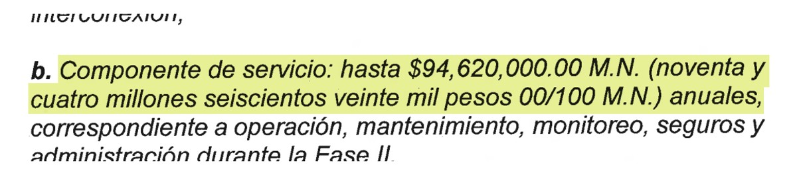
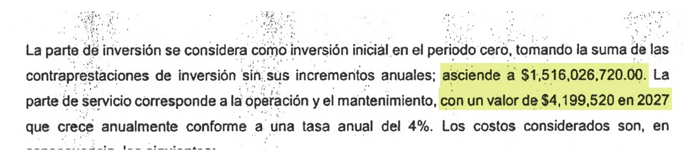
Ese pago tiene respaldo. Sale de un fideicomiso irrevocable con el 35% de lo que el SAPAC recauda por el agua. Si no alcanza, sale del 18.80% de las participaciones federales de Cuernavaca, el dinero de calles, seguridad y basura. El municipio, además, queda como garante, avalista y deudor solidario. Es el mismo organismo al que, según las actas de su Junta, el Ayuntamiento le ha prestado para cubrir el IMSS y los aguinaldos.
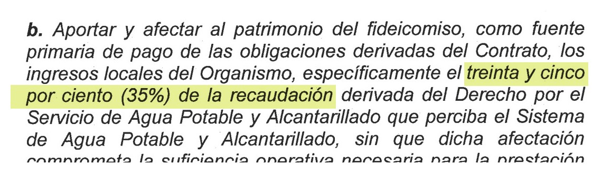
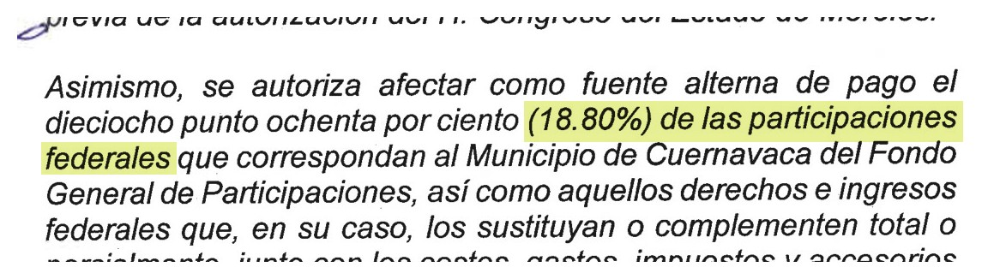
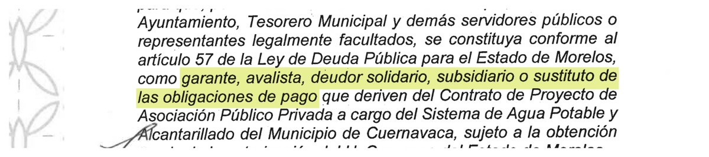
Quién firma
En la sesión de cabildo, un regidor preguntó qué alternativas se habían estudiado, porque, dijo, nunca escuchó otras opciones, y pidió que el punto se reservara para revisarlo. Se votó ese mismo día: 9 a favor y 4 en contra.
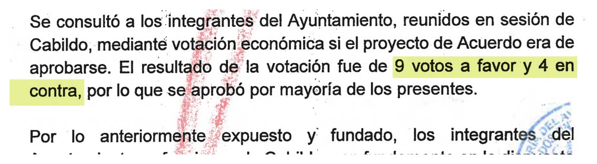
El presidente municipal, José Luis Urióstegui Salgado, preside la Junta de Gobierno del SAPAC que aprobó el dictamen y el cabildo que votó el acuerdo. Su administración termina en 2027; el contrato dura 20 años y lo respalda el recibo del agua. Las explicaciones que el oficio no da tienen, por eso, un destinatario natural. Por qué se vota en las instalaciones lo que los anexos ponen en Jojutla. Por qué el techo de servicio es 22 veces el cálculo del propio organismo. Por qué el estudio que su Junta ordenó publicar en diez días hábiles no está en la página del organismo. ¿Por qué el estudio que exige la ley a la empresa no llegó al Congreso?
Cómo se hicieron las cuentas
Todas las cifras de partida son del oficio SA/139/2026 y sus anexos, a precios constantes de 2027, como los usa el propio expediente; las páginas van en el anexo documental. Las operaciones son nuestras y se pueden rehacer con una calculadora.
Datos de partida. Costo de luz que la planta evitaría el primer año: $104,565,764.62, que es el costo sin proyecto, $116,184,182.91, menos el costo con proyecto, $11,618,418.29 (p. 109). Costo evitado en los 19 años: $1,885,672,131.29 (p. 109). Ahorro neto del primer año: $6,454,471; acumulado al 2045: $81,227,081 (p. 116). Parte del pago que no se descuenta si la planta rinde menos: $6,649,240 de $6,999,200 mensuales, el 95% (pp. 5 y 358). Desgaste de los paneles: "no mayor a 0.5% anual a partir del segundo año" (p. 430). La proyección supone que la planta cubre cada año el 90% de una demanda que crece (p. 109, tabla 2.2), así que no descuenta ese desgaste.
Lo que se le paga a la empresa en el modelo. Es el costo evitado menos el ahorro neto. El primer año, $104,565,764.62 menos $6,454,471 da $98,111,293.62, el 93.8% del costo evitado; de ahí sale "94 de cada 100 pesos". En los 19 años, $1,885,672,131.29 menos $81,227,081 da $1,804,445,050.29.
La regla. Si la planta entrega una fracción g de lo prometido, el costo evitado se multiplica por g. Del pago, el 95% se cobra igual y el 5% restante baja en la misma proporción, supuesto favorable al proyecto. El ahorro es: g × costo evitado − (0.95 × pago + 0.05 × pago × g).
Punto de equilibrio. El ahorro del primer año llega a cero cuando g = 0.95 × 98.11 ÷ (104.57 − 0.05 × 98.11) = 0.935. Con 6.5% menos de generación, ese año cuesta más que la CFE.
Un año malo. Con g = 0.90 el primer año: 0.90 × 104.57 − (93.21 + 4.42) = −3.5 millones.
El desgaste. Si la generación del año t es 0.995 elevado a (t − 1), el promedio de los 19 años es 0.956. Aplicado a los totales con la regla de arriba, el ahorro de 81.2 millones queda en unos 2.7. Si a eso se suma 5% menos de generación (g = 0.956 × 0.95), el saldo es de −83.2 millones. Con g = 0.95 fijo, −8.5; con g = 0.90, −98.3.
El crédito público. El comparador supone un crédito de $910,841,144.86 (p. 149) por el que se pagarían $2,166,468,852.60 entre capital e intereses (p. 337). Diecinueve anualidades iguales sobre ese crédito dan ese total con una tasa de 10.7% anual. Con 9.7%, el total baja a unos $2,029 millones, unos 138 millones menos.
Lo que estas cuentas no incluyen. Los cargos de la CFE por demanda, el traslado de la energía por la red, lo que la central consume de noche y lo que se pierde en el trayecto. La tabla de costos no los identifica y todos restarían ahorro. Son aproximaciones con la información del propio expediente, no una auditoría.
Documentos para descargar
- Anexo documental: las páginas del oficio SA/139/2026 citadas en esta columna (PDF)
- El oficio completo, de 506 páginas, se obtuvo por transparencia con la solicitud 170358526000633.
- Oficio SA/139/2026 del Ayuntamiento de Cuernavaca al Congreso de Morelos y sus anexos: monto y componente de servicio (p. 3), instalaciones del organismo y Fase I sin pago (p. 4), 95% no penalizable (pp. 5 y 358), fuente de pago y aval (pp. 6 y 7), reversión (p. 8), fechas del comité, del análisis y Valor por Dinero (p. 22), préstamos al SAPAC (pp. 49 y 65), pregunta de la Conagua (p. 68), votación de cabildo (pp. 24 y 467), deuda con CFE (p. 72), abstenciones en la Junta (p. 76), acuerdo de la Junta para publicar el Estudio de Viabilidad (pp. 81 y 82), central en Jojutla y propuesta de EMCO (p. 94), costo de energía evitado (p. 109), ahorro neto acumulado de 81.2 millones (p. 116), comparador con el diseño del proponente (p. 117), costo base del Proyecto de Referencia e intereses del crédito público (pp. 129 y 130), costo base y costo de financiamiento de la APP (pp. 169 y 170), crédito del Proyecto de Referencia (p. 149), financiamiento y riesgos transferibles (p. 179), fuente y composición del financiamiento de la APP (p. 187), fuentes de datos (p. 207), propuesta, estudio y opinión de viabilidad (p. 215), permisos pendientes (p. 219), comparador de los estudios previos con crédito de 2,166.5 millones y Valor por Dinero de 9.3 millones (p. 337), inversión, contraprestación y servicio estimado (p. 358), cuadro de marco legal con el "artículo 23" (p. 372), reembolso al proponente (p. 390), transmisión del inmueble al término (p. 398), predios y uso de suelo (pp. 399, 421, 426 y 430), gravámenes, certificado registral y copropietarios (pp. 428 y 429), el predio "pasaría" al municipio (p. 429), sección 5.7 (p. 400), tamaño de 12 a 15 megawatts (p. 405), valuación del terreno (p. 427), luz, ahorro y deuda con CFE (p. 448), costo de la red y petición de reservar el punto (p. 466). Páginas en el anexo documental de arriba.
- Ley de Asociaciones Público Privadas para el Estado de Morelos y sus Municipios, Periódico Oficial "Tierra y Libertad" 5925, 10 de marzo de 2021 (texto original, sin reformas publicadas a la fecha de consulta; copia cotejada en el acervo LEYES/ de 45 Digital Noticias), artículos 2, 23, 24, 26, 34, 35, 39 a 42 y 111. marcojuridico.morelos.gob.mx/documentos/2839/download
- SAPAC, portada de sapac.gob.mx consultada el 13 de noviembre de 2026: aviso "Análisis de Viabilidad del proyecto" y dictamen del Comité Interno de APP del 1 de septiembre de 2026, subido el 10 de noviembre de 2026. sapac.gob.mx/wp-content/uploads/2026/11/Punto-VIII.-DICTAMEN-DE-VIABILIDAD-1.pdf
- Ayuntamiento de Cuernavaca, boletín B1545, 17 de septiembre de 2026: "Avanza Cuernavaca en proyecto de energía solar para reducir hasta 40 % el gasto eléctrico del SAPAC". cuernavaca.gob.mx/?p=63221
- IRENA (2026). Renewable Power Generation Costs in 2025, p. 61. irena.org/-/media/Files/IRENA/Agency/Publication/2026/Jul/IRENA_TEC_RPGC_in_2025_2026.pdf
- INEGI, Marco Geoestadístico: colindancias de Cuernavaca. inegi.org.mx/contenidos/app/mexicocifras/datos_geograficos/17/17012.pdf
- Diario del Yaqui, 5 de junio de 2023: "Alcalde defiende a EMCO ante quejas por mal servicio". diariodelyaqui.mx/ciudadobregon/alcalde-defiende-a-emco-ante-quejas-por-mal-servicio/67123
- Zeta Tijuana, 17 de enero de 2022: "Ayuntamiento de Tijuana da licitación de luminarias a empresa más cara". zetatijuana.com/2022/01/ayuntamiento-de-tijuana-da-licitacion-de-luminarias-a-empresa-mas-cara
- Meganoticias, 8 de junio de 2023: "Navojoa: EMCO, el contrato millonario sin utilidad". meganoticias.mx/puebla/noticia/navojoa-emco-el-contrato-millonario-sin-utilidad/431361
- Diario del Yaqui, 23 de mayo de 2023: "Servicio de alumbrado en Navojoa no se irá con EMCO: Mario Ramírez". diariodelyaqui.mx/sonora/servicio-de-alumbrado-en-navojoa-no-se-ira-con-emco-mario-ramirez/66578
- Engel, E., Fischer, R. y Galetovic, A. (2014). The Economics of Public-Private Partnerships: A Basic Guide. Cambridge University Press.
Las ligas van a la vista para que cualquiera compruebe por su cuenta. Si alguna dejó de resolver, escríbenos y la reponemos.
SRVO